무선설비기사 (2019-10-12 기출문제)
1과목: 디지털 전자회로
1. 다음 중 정류회로에서 다이오드를 병렬로 여러개를 접속시킬 경우에 나타나는 특성으로 옳은 것은?
- 과전압으로부터 보호한다.
- 정류회로의 전류용량이 커진다.
- 정류기의 역방향 전류가 감소한다.
- 부하출력에서 맥동률을 감소시킨다.
(정답률: 69%)

2. 다음 평활회로에서 직류출력전압은 약 얼마인가?
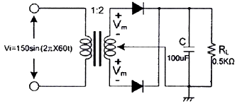
- 48[V]
- 72[V]
- 138[V]
- 192[V]
(정답률: 62%)
3. 제너 다이오드의 양단 전압이 12[V], 제너 다이오드에 흐르는 전류가 10[mA]일 때 제너 다이오드측의 소비전력은?
- 120[mW]
- 130[mW]
- 140[mW]
- 150[mW]
(정답률: 86%)
4. 다음 중 트랜지스터 증폭 특성에 대한 설명으로 틀린 것은?
- 공통 베이스 회로의 입력 임피던스는 작고 출력 임피던스는 크다.
- 공통 베이스 회로의 전류 이득과 공통 컬렉터 회로의 전압 이득은 모두 1보다 크다.
- 공통 컬렉터 회로의 입력 임피던스는 크고 출력 임피던스는 작아 임피던스 매칭 회로로 사용된다.
- 증폭 회로의 입출력 위상관계는 공통 베이스 및 컬렉터 회로의 경우 동일 위상이고 공통이미터의 경우 반전된 위상이다.
(정답률: 73%)
5. 다음 부궤환 방식 중 입력 임피던스는 감소하고 출력 임피던스가 증가하는 방식은?
- 병렬 전류 궤환회로
- 병렬 전압 궤환회로
- 직렬 전류 궤환회로
- 직렬 전압 궤환회로
(정답률: 60%)
6. 다음 중 OP-AMP 성능을 판단하는 파라미터로 관련이 없는 것은?
- vio(입력 오프셋 전압)
- CMRR(동상 신호 제거비)
- IB(입력 바이어스 전류)
- PIV(최대 역 전압)
(정답률: 81%)
7. 다음 그림에서 입력전압 Vi는?(단, R1 = 2R2)
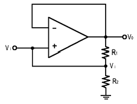
- Vi = Vo
- Vi = 2Vo
- Vi = Vo / 3
- Vi = 3Vo
(정답률: 78%)
8. 그림과 같은 회로에 대한 설명 중 옳은 것은?
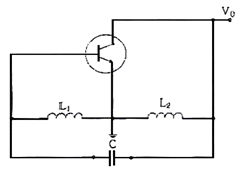
- 콜피츠 발진회로이다.
- VHF대나 UHF대에서 많이 사용된다.
- 부궤환을 적용하였다.
- 하틀리 발진회로이다.
(정답률: 81%)
9. 발진회로의 출력이 직접 부하와 결합되면 부하의 변동으로 인하여 발진주파수가 변동된다. 이에 대한 대책이 아닌 것은?
- 정전압 회로를 사용한다.
- 발진회로와 부하 사이에 완충증폭기를 접속한다.
- 발진회로를 온도가 일정한 곳에 둔다
- 다음 단과의 결합을 밀 결합으로 한다.
(정답률: 72%)
10. 다음 중 수정발진기에서 발진주파수가 안정된 이유가 아닌 것은?
- 발진 조건을 만족하는 유도성 주파수 범위가 넓다.
- 주위 온도의 영향이 적다.
- 전원이나 부하의 변동에 대하여 안정도가 좋다.
- 수정진동자의 q가 높다
(정답률: 54%)
11. FM 변조에서 최대 주파수 편이가 80[kHz]일 때 주파수 변조파의 대역폭은 약 얼마인가?
- 40[kHz]
- 60[kHz]
- 80[kHz]
- 160[kHz]
(정답률: 83%)
12. 다음 중 PM변조파에 대한 설명으로 옳은 것은?
- 순시위상은 변조신호의 미분값에 비례하고, 순시주파수는 변조 신호에 비례한다.
- 순시위상은 변조신호에 비례하고, 순시주파수는 변조신호의 미분값에 비례한다.
- 순시위상은 변조신호의 적분값에 비례하고, 순시주파수는 변조신호에 비례한다.
- 순시위상은 변조신호에 비례하고, 순시주파수는 변조신호의 적분값에 비례한다.
(정답률: 67%)
13. 주파수변조(FM)에서 변조지수를 나타낸 것 중에 대역폭이 가장 넓은 것은?
- 0.5
- 1
- 1.5
- 2
(정답률: 81%)
14. FM수신기에 사용되는 주파수변별기의 역할은?
- 주파수 변화를 진폭 변화로 바꾸어준다.
- 진폭변화를 위상 변화로 바꾸어준다.
- 주파수체배를 행한다.
- 최대주파수편이를 증가시킨다.
(정답률: 61%)
15. 다음 그림은 이상적인 펄스를 나타낸 것이다. 펄스의 듀티 싸이클(duty cycle) D의 식으로 옳은 것은?
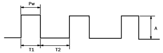
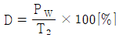
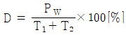
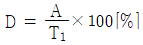
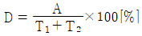
(정답률: 83%)
16. 다음 그림과 같은 클램핑 회로의 출력 파형은?
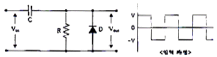
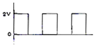
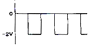
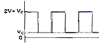
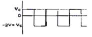
(정답률: 75%)
17. 다음 논리식을 간단히 하면?
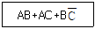
- AB+C
- AC+B
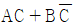
- A
(정답률: 60%)
18. 다음 진리표를 부울 대수식으로 표시하면?
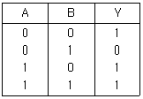
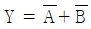
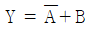
- Y = A * B
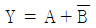
(정답률: 75%)
19. 다음 중 리플 카운터(ripple counter)에 대한 설명으로 틀린 것은?
- 비동기 카운터이다.
- 카운트 속도가 동기식 카운터에 비해 느리다.
- 최대 동작 주파수에 제한을 받지 않는다.
- 회로 구성이 간단하다.
(정답률: 61%)
20. 그림의 코드 변환회로의 명칭은?
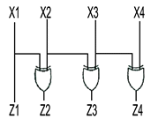
- BCD-GRAY 코드변환기
- BCD-2421 코드변환기
- BCD-3초과 코드변환기
- BCD-9의 보수 변환기
(정답률: 74%)
2과목: 무선통신 기기
21. AM(amplitude modulation)에서 반송파 전압이 10[V], 변조도가 80[%]일 때 상측파대 전압은 몇 [V] 인가?
- 2[V]
- 4[V]
- 6[V]
- 8[V]
(정답률: 60%)
22. 웨버법에 의한 SSB파 발생 회로의 구성 요소가 아닌 것은?
- 평형 변조기
- [90°] 이상 회로
- 합성 회로
- 고역 필터
(정답률: 61%)
23. 단일 리액턴스관((reactance tube)방식으로서 최대 주파수편이 30[kHz]를 얻으려면 얼마로 체배하여야 하는가? (단, 음성주파수 범위는 30[Hz]~3,000[Hz]이고, 이 리액턴스관의 직선범위는 0.33[rad]이다.)
- 약 10체배
- 약 20체배
- 약 30체배
- 약 40체배
(정답률: 66%)
24. 다음 중 FM송신기에 사용되는 IDC회로의 기능을 바르게 나타낸 것은?
- 변조신호의 진폭 강화
- 임계현상 억제
- 최대 주파수편이의 규정치 유지
- 도래전파가 없을 때 잡음출력 억제
(정답률: 56%)
25. 주파수 90[kHz]에 반송파를 6[kHz] 정현파 신호로 FM(frequency modulation) 변조했을 때 최대주파수 편이가 76[kHz]일 경우, 점유 주파수대폭은 몇 [kHz]인가?
- 12[kHz]
- 82[kHz]
- 152[kHz]
- 164[kHz]
(정답률: 74%)
26. 그림과 같이 PM 변조기를 이용하여 FM변조 신호를 발생하고자 한다. 괄호에 들어갈 내용으로 적합한 것은?
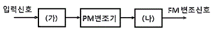
- (가) 미분기, (나) 없음
- (가) 적분기, (나) 없음
- (가) 없음, (나) 미분기
- (가) 없음, (나) 적분기
(정답률: 67%)
27. 다음 중 스펙트럼 확산(spread spectrum) 변조 방식에 대한 대한 설명으로 틀린 것은?
- 복조는 비동기 검파방식만 사용한다,
- 전송 중의 신호전력 스펙트럼 밀도가 낮다.
- 확산계수가 클수록 비화성이 우수하다.
- 혼신이나 페이딩 등에 강하다.
(정답률: 65%)
28. 다음 중 전송속도와 보[Baud]속도가 항상 같은 변조방식은 무엇인가?
- FSK(Frequency-shift keying)
- QPSK(Quadrature Phase Shift Keying)
- QAM(Quadrature Amplitude Modulation)
- OQPSK(Offset Quadrature Phase Shift Keying)
(정답률: 75%)
29. 다음 중 16QAM 시스템의 신호에 대한 설명으로 옳은 것은?
- 16개의 위상과 진폭의 조합으로 구성된다.
- 16개의 위상과 주파수의 조합으로 구성된다.
- 16개의 주파수와 진폭의 조합으로 구성된다.
- 16개의 주파수와 반송파의 조합으로 구성된다.
(정답률: 83%)
30. 16진 QAM(Quadrature Amplitude Modulation)의 대역폭 효율은 몇[bps/HZ] 인가?
- 1[bps/HZ]
- 2[bps/HZ]
- 4[bps/HZ]
- 8[bps/HZ]
(정답률: 87%)
31. 다음 항법 장치 중 무선 항법 장치가 아닌 것은?
- SSR
- DME
- VOR
- TACAN
(정답률: 60%)
32. 다음 중 축전지의 백색 황산납 발생의 원인이 아닌 것은?
- 극판에 불순물이 혼합되었을 때
- 과도하게 충전할 때
- 방전한 대로 방치할 때
- 전해액의 비중이 너무 클 때
(정답률: 54%)
33. 전원회로에 관한 설명 중 서로 관계가 먼 것은?
- 평활회로 : 저역통과 여파기
- 전원 변압기 내압 : 코일의 굵기, 횟수
- 교류 전원 상수 : 리플
- 정전압 회로 : 증폭도
(정답률: 76%)
34. 무부하시 직류 출력전압이 10[V]인 정류회로의 전압 변동률이 10[%]일 경우, 부하 시 직류 출력전압은 약 얼마인가?
- 7.09[V]
- 8.09[V]
- 9.09[V]
- 10.09[V]
(정답률: 80%)
35. 태양광 발전시스템 DC전기를 사용할 때 필요치 않은 자재는?
- 태양전지모듈
- 밧데리(축전지)
- 인버터
- 브리지 발진기
(정답률: 63%)
36. 다음 중 수신기의 전기적 성능을 나타내는 지표로서 가장 적합한 것은?
- 변조도, 왜율, 안정도
- 감도, 선택도, 충실도
- 감도, 변조도, 점유주파수대폭
- 변조도, 왜율, 점유주파수대폭
(정답률: 82%)
37. 수신기 특성 중 1신호 선택도에 해당되지 않는 것은?
- 감도 억압 효과
- 근접 주파수 선택도
- 영상 주파수 선택도
- 스퓨리어스 레스폰스
(정답률: 53%)
38. 기본단위인 길이, 질량, 시간 등을 측정하여 피측정량을 알아내는 측정하여 피측정량을 알아내는 측정을 무엇이라 하는가?
- 절대 측정
- 직접 측정
- 간접 측정
- 비교 측정
(정답률: 78%)
39. 안테나의 실효 인덕턴스가 2[μH], 실효 정전용량이 2[pF]일 때 이안테나의 고유 주파수는 약 얼마인가?
- 60[MHz]
- 80[MHz]
- 100[MHz]
- 120[MHz]
(정답률: 55%)
40. 다음 중 축전지 용량이 감소하는 원인으로 적합하지 않는 것은?
- 전해액의 부족
- 전해액 비중의 감소
- 극판의 부식 및 균열
- 백색 황산연의 제거
(정답률: 83%)
3과목: 안테나 공학
41. 비유전율(εs)이 1이고 비투자율(μs)이 9인 매질 내를 전파하는 전자파의 속도는 자유공간을 전파할 때와 비교해서 몇 배의 속도가 되는가?
- 2배
- 1/2배
- 3배
- 1/3배
(정답률: 83%)
42. 자유공간에서 전파가 20[μs]동안 전파되었을 때 진행한 거리는?
- 2[km]
- 6[km]
- 20[km]
- 60[km]
(정답률: 72%)
43. 다음 중 포인팅 벡터의 크기를 나타내는 것은? (단, E : 전계의 세기, H : 자계의 세기, μ : 투자율, ε : 유전율)
- EH
- με
- H/E
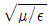
(정답률: 82%)
44. 그림과 같이 600[MHz]의 반파장 안테나의 끝에서 전압 급전을 하고자 한다. 급전선(I)의 최소 길이는?
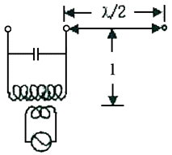
- 0.25m
- 2.5m
- 25m
- 250m
(정답률: 62%)
45. 다음 중 급전점이 전류 정재파의 파복이 되는 것은?
- 전압급전
- 전류급전
- 동조급전
- 비동조급전
(정답률: 66%)
46. 복사저항 450[Ω] 인 폴디드다이폴 안테나 두 개를 λ/4 임피던스 변환기를 사용하여 100[Ω]의 평행 2선식 급전선에 정합시키고자한다. 이 때 변환기의 임피던스 값은?
- 212[Ω]
- 275[Ω]
- 300[Ω]
- 424[Ω]
(정답률: 68%)
47. 다음 중 도파관은 어떠한 특성을 가진 여파기(Filter)로 볼 수 있는가?
- 대역소거여파기(Band Rejection Filter)
- 저역통과여파기(Low Pass Filter)
- 고역통과여파기(High-Pass Filter)
- 대역통과여파기(Band-Pass Filter)
(정답률: 72%)
48. 다음 중 도파관은 임피던스 정합방법의 종류가 아닌 것은?
- 도체봉에 의한 정합
- 아이솔렉이터에 의한 정합
- 창에 의한 정합
- 다이플렉서에 의한 정합
(정답률: 70%)
49. 접지저항 10[Ω] 인 λ/4 수직접지안테나의 복사 능률은 약 얼마인가?
- 78[%]
- 94[%]
- 80[%]
- 75[%]
(정답률: 53%)
50. 다음 중 등방성 안테나의 상대 이득은?
- 0[dBd]
- 1[dBd]
- 1.64[dBd]
- 1/1.64[dBd]
(정답률: 57%)
51. Friis의 전달공식에서 송신기와 수신기 안테나 간의 거리가 2배 증가 할수록 수신전력은 어떻게 되는가?
- 2[dB] 증가한다.
- 3[dB] 증가한다.
- 4[dB] 감소한다.
- 6[dB] 감소한다.
(정답률: 69%)
52. 다음 중 애드콕(Adcock) 안테나의 특징이 아닌 것은?
- 야간오차 방지효과가 있다
- 수평면내 8자형 지향성을 갖는다
- 방향탐지용 안테나이다.
- 수직편파 성분은 결합코일에서 서로 상쇄된다.
(정답률: 61%)
53. 다음 중 제펠린(zepelín) 안테나에 대한 특성으로 맞는 것은?
- 전류 급전방식이다.
- 수평면내 지향특성은 수평 다이폴과 같이 8자형이다
- 효율이 나쁘다.
- 진행파형 안테나이다.
(정답률: 64%)
54. 장·중파대의 송신 안테나의 접지방식 중 대규모(대전력용) 방송국에 가장 적합한 것은?
- 심굴 접지
- 다중 접지
- 가상 접지
- 방사상 접지
(정답률: 74%)
55. 다음 중 양청구역에 대한 설명으로 틀린 것은?
- 전리층 반사파와 지표파간의 간섭이 약한 지역으로 통신품질이 양호한 지역이다.
- 전리층 반사파 전계가 지표파의 전계강도보다 강한 지역이다.
- 송신 안테나에서부터 전리층 반사파와 지표파의 전계강도가 같아지는 지점까지의 영역이다.
- 수신점의 잡음온도, 송신전력, 대지의 전기적 특성에 따라 달라진다.
(정답률: 59%)
56. 다음 중 회절파에 대한 설명으로 틀린 것은?
- 산악회절파는 페이딩이 적다.
- 산악회절파는 지리적 제한을 받는다.
- 송.수신점의 정중앙에 산악이 있을 때에 산악회절 이득이 최대가 된다.
- 회절계수가 커지면 회절손실도 크게 된다.
(정답률: 67%)
57. 극초단파 대역의 신호를 사용하여 200km~1500km정도 떨어져 있는 구 지점 간에 통신을 할 때 주로 사용하는 전파는?
- 대류권 산란파
- 지표파
- 전리층 산란파
- 회절파
(정답률: 61%)
58. 스포라딕(Es) 전리층에 대한 설명으로 틀린 것은?
- E층보다 전자밀도가 높다.
- E층과 거의 같은 높이에 형성된다.
- 발생지역이 광범위하며, 발생 주기는 불규칙하다.
- 발생 원인이 명백하게 밝혀지지 않고 있다.
(정답률: 55%)
59. 다음 중 델린저 현상에 대한 설명으로 틀린 것은?
- 태양의 흑점 폭발 시 발생된 다량의 자외선에 의해 야기된다.
- 주로 저위도 지방에서 주간에 발생한다.
- 1.5[MHz]~20[MHz]의 단파통신에 영향을 준다.
- F층의 전자밀도가 순간적으로 증가하게 된다.
(정답률: 53%)
60. 다음 중 EMI[Electro Magnetic Interference] 용어에 대한 설명으로 옳은 것은?
- 인체, 기자재, 무선설비 등을 둘러싸고 있는 전파의 세기, 잡음 등 전자파의 총체적인 분포 상황이다.
- 어떤 기기에 대해 전자파 방사 또는 전자파 전도에 의한 영향으로부터 정상적으로 동작할 수 있는 능력으로 전자파로부터 보호라고도 한다.
- 전자파장해를 일으키는 기자재나 전자파로부터 영향을 받는 기자재가 전자파장해 방지기준 및 보호기준에 적합한 것으로 전자파를 주는 측과 받는 측의 양쪽에 적용하여 성능을 확보 할 수 있는 기기의 능력이다.
- 전자파를 발생시키는 기자재로부터 전자파가 방사 또는 전도되어 다른 기자재의 성능에 장해를 주는 것이다.
(정답률: 64%)
4과목: 무선통신 시스템
61. 랜덤변수 X1과 X2의 평균이 각각 2,
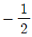
일 때, Y = 2X1 + 3X1X2 의 평균은 얼마인가? (X1, X2는 서로 독립이다.)- 2
- -1
- 0
- 1
(정답률: 71%)
62. 다음 중 증폭기를 광대역폭(성)으로 하는 방법이 아닌 것은?
- 증폭기의 다단 접속
- 스태거(Stagger)의 동조 방식 설계
- 보상 회로 첨가
- 부궤환 방식 응용
(정답률: 64%)
63. 다음 중 디지털 통신시스템의 성능 평가에 가장 적합한 것은?
- 왜율
- SINAD
- BER
- S/N
(정답률: 77%)
64. 무선통신시스템에서 PLL(Phase Lock Loop) 없이는 구현이 불가할 만큼 많이 사용되고 있는데, Digital PLL의 구성요소가 아닌 것은?
- TDC(Time Digital Converter)
- DCO(digital controlled Osc)
- Digital Filter
- Charge Pump
(정답률: 75%)
65. 다음 중 마이크로파 전송 구간의 페이딩 억제 방안으로 맞는 것은?
- 구형 도파관 이용
- 위상 증폭기 사용
- 공간 다이버시티 이용
- 채널 분파기 이용
(정답률: 69%)
66. 다음 보기는 무엇에 대한 설명인가?
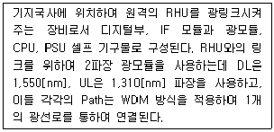
- MHU(Master Hub Unit)
- RHU(Remote Hub Unit)
- RU(Remote Unit)
- RPU(Remote Pack Unit)
(정답률: 70%)
67. 다음 중 대역확산 방식의 장점이 아닌 것은?
- 방해파 억압
- 에너지 밀도 증가
- 우수한 시간 해상도
- 채널 분파기 이용
(정답률: 62%)
68. 다음 중 이동통신의 무선망 설계 시 고려사항이 아닌 것은?
- 채널할당
- 트래픽 분석
- 전계강도 분석
- 저가장비 채택율
(정답률: 80%)
69. 단위 면적당 기지국 밀도를 일정하게 한 경우에 얻을 수 있는 최저 수신 레벨은 어느 모양 일 때 가장 우수한가?
- 사각형
- 육각형
- 삼각형
- 원형
(정답률: 75%)
70. 다음 중 IS-95 CDMA 시스템에서 이동국이 Pilot 신호의 세기를 기반으로 전력제어를 하는 방식은?
- 개방 루프 전력 제어(open loop Power Control)
- 폐 루프 전력 제어 (Closed loop Power Control)
- 교환국 전력제어 방식
- 기지국 전력제어 방식
(정답률: 61%)
71. WCDMA 시스템에서 기지국은 핸드오버를 위하여 인접 셀의 정보를 단말에게 통지한다. 이 경우 통지 가능한 최대 셀의 개수는 몇 개인가?
- 15개
- 20개
- 31개
- 63개
(정답률: 69%)
72. 다음 중 상위의 계층에서 주어진 정보를 공통으로 이해할 수 있는 표현 형식으로 변환하는 기능을 제공하는 계층은?
- 네트워크 계층
- 세션계층
- 표현 계층
- 응용 계층
(정답률: 74%)
73. OSI 참조모델에서 전송제어, 흐름제오, 오류제어 등의 역할을 수행하는 계층은?
- 세션 계층
- 네트워크 계층
- 물리 계층
- 데이터링크 계층
(정답률: 71%)
74. 다음 중 마스터 스테이션으로부터 슬레이브 스테이션에게 전송할 데이터가 있는지 물어보는 방식은?
- Contention
- Polling
- Selection
- Detection
(정답률: 81%)
75. 다음 중 TCP over Wireless 기술에 해당되지 않는 것은?
- End-to-End Solutions
- Dynamic Host Configuration
- Link Layer PRotocols
- Split TCP Approach
(정답률: 68%)
76. 무선 LAN의 특성으로 틀린 것은?
- 전파를 이용해 데이터를 송수신
- 배선으로부터 해방
- 단말기 설치의 자유도 향상
- 장거리 무선 통신 방식
(정답률: 80%)
77. 다음 중 무선망 최적화 수행사항이 아닌 것은?
- 커버리지 확보
- 절단율 개선
- 기지국 용량 감소
- 통화량 균등 분배
(정답률: 71%)
78. 다음 중 유지보수 장애처리 종료 후 업무로 적합하지 않은 것은?
- 장애 해결 상황을 담당자에게 통보
- 장애 조치 결과 보고서를 작성
- 장애 발생 접수 및 보고
- 장애 근본 원인분석을 판단하여 재발방지 위한 대책 강구
(정답률: 76%)
79. 스퓨리어스 방사의 종류는 전도성과 방사성으로 나누어 지는데 이 전도성이 의미하는 것은?
- 기지국의 RF 출력단에서 측정한 것
- RF 출력단을 종단시키고 전자파 무반사실 내에서 측정한 것
- 단말기의 RF 입력단에 측정한 것
- RF 출력단을 종단시키고 저자파 반사실 내에서 측정한 것
(정답률: 58%)
80. 다음 중 잡음방해의 개선 방법으로 틀린 것은?
- 수신 전력을 크게 한다.
- 수신기의 실효대역폭을 넓게 한다.
- 적절한 통신방식을 선택한다.
- 송신전력을 크게 하고 수신기를 차폐한다.
(정답률: 69%)
5과목: 전자계산기 일반 및 무선설비기준
81. 16진수의 값 '12345678'을 기억장치에 저장하려고 한다. Little Endian 방식으로 저장된 것은 어느 것인가?
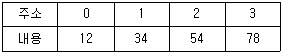
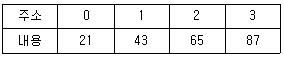
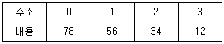
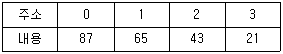
(정답률: 66%)
82. 액정 디스플레이(LCD)에 대한 설명 중 틀린 것은?
- 네온 전구와 아르곤 가스를 이용한 플라즈마 현상에 의해 정보를 표시한다.
- 디지털 계산기나 노트북, 컴퓨터 등의 표시장치에 사용된다.
- 비발광체이기 때문에 CRT보다 눈이 피로가 적고 전력소모가 적다.
- 보는 각도에 따라 선명도가 달라진다.
(정답률: 68%)
83. 다음 중 입력장치와 출력 장치가 순서대로 짝지어진 것은?
- 마우스-트랙볼
- 디지털 카메라-스캐너
- 트랙볼-LCD
- CRT-PDP
(정답률: 71%)
84. 10진수 46을 2진화 10진수(BCD)로 표현하면?
- 01000110
- 01010010
- 01010011
- 00100110
(정답률: 66%)
85. 두 개의 레지스터에 십진수의 1과 –1에 해당하는 이진수가 저장되어 있다. 이 두 레지스터에 덧셈 연산을 수행한 결과로 옳은 것은?
- 결과 값은 0이고, 캐리(Carry)가 발생하지 않는다.
- 결과 값은 0이고, 캐리(Carry)가 발생한다.
- 오버플로우(Overflow)와 캐리(Carry)가 발생한다.
- 오버플로우(Overflow)는 발생하나 캐리(Carry)는 발생하지 않는다.
(정답률: 64%)
86. 정보표현의 단위가 작은 것부터 큰 순으로 올바르게 나열된 것은?
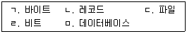
- ㄱ, ㄴ, ㄷ, ㄹ, ㅁ
- ㄹ, ㄱ, ㄴ, ㄷ, ㅁ
- ㄹ, ㄷ, ㄱ, ㅁ, ㄴ
- ㄱ, ㄹ, ㄷ, ㄴ, ㅁ
(정답률: 77%)
87. 다음 중 가중치 코드에 해당하지 않는 것은?
- BCD 코드
- 2421 코드
- Gray 코드
- 5211 코드
(정답률: 75%)
88. OS(Operating System) 기능 중 자원관리에 속하지 않는 것은?
- 기억장치 관리
- 주변장치 관리
- 파일 관리
- 보안 관리
(정답률: 68%)
89. 4개 중앙처리장치(CPU)를 두고 하나의 주기억장치(main memory)로 구성된 컴퓨터 시스템이 있다. 이 컴퓨터에서 하나의 작업을 4개의 중앙처리장치에서 동시에 수행하기 위하여 가장 적합한 운영체제 시스템은?
- 분산 처리(Distributed Processing) 시스템
- 다중 처리(Multi Processing) 시스템
- 다중 프로그래밍(Multi programming)시스템
- 실시간 처리[real-time processing] 시스템
(정답률: 70%)
90. 저작자(개발자)에 의해 무상으로 배포되는 컴퓨터 프로그램으로 개인이나 열광자(enthusiast)가 자기의 작품에 대해 동호인들의 평가를 받기 위해서 또는 개인적 만족감을 얻기 위해서 사용자 집단(User Grop), PC 통신망의 전자 게시판이나 공개 자료실, 인터넷의 유즈넷(Usenet) 등을 통해 배포하는 소프트웨어는?
- 프리웨어
- 소셜 소프트웨어
- 멀웨어
- 번들
(정답률: 77%)
91. 다음 중 무선국이 갖추어야 할 개설조건에 속하지 않는 것은?
- 통신사항이 개설목적에 적합할 것.
- 개설목적의 달성에 필요한 최소한의 안테나공급전력을 사용할 것
- 무선설비는 선박의 항행에 지장을 주지 아니하는 장소에 설치할 것
- 이미 개설되어 있는 다른 무선국의 운용에 지장을 주지 아니할 것
(정답률: 62%)
92. 다음 중 필요주파수대폭 202(MHz)를 바르게 표시한 것은?
- M202
- 2M02
- 202M
- 20M2
(정답률: 73%)
93. 무선종사자가 2차 이상 통신보안교육을 받지 않거나 통신보안사항을 준수하지 아니한 경우 벌칙을?
- 3개월 이내의 업무정지
- 6개월 이내의 업무정지
- 1년 이내의 업무정지
- 2년 이내의 업무정지
(정답률: 59%)
94. 거짓으로 적합성평가를 받은 후 그 적합성평가의 취소처분을 받은 경우에 해당 기자재는 얼마 이내의 기간 동안 적합성평가를 받을 수 없는가?
- 1년
- 2년
- 3년
- 5년
(정답률: 70%)
95. 적합성평가를 받은 자에게 사후관리 대상기자재의 제출을 요구할 경우에 반입 수량은 몇 대까지로 하는가?
- 2대 이하
- 3대 이하
- 5대 이하
- 10대 이하
(정답률: 69%)
96. 거짓이나 그 밖의 부정한 방법으로 적합성평가를 받았을 때 행정처분의 내용이 아닌 것은?
- 시정명령
- 개선명령
- 수입품 대체
- 판매중지
(정답률: 77%)
97. 다음 중 무선설비 등에서 발생하는 전자파가 인체에 미치는 영향을 고려하여 고시하여야 할 항목이 아닌 것은?
- 전자파 기기의 보호기준과 등급
- 전자파 흡수율 측정기준
- 전자파 강도 측정기준
- 전자파 측정대상 기자재와 측정방법
(정답률: 43%)
98. 필요주파수대 바깥쪽에 위치한 하나 이상의 주파수에서 발생하는 발사로서 정보전송에 영향을 미치지 아니하고 그 강도를 저감시킬 수 있는 것으로 고조파발사, 기생발사, 상조변조 및 주파수 변환 등에 의한 발사를 무엇이라 하는가?
- 스퓨리어스 발사
- 대역외 발사
- 점유주파수 발사
- 혼변조 발사
(정답률: 68%)
99. 의무항공기국의 예비전원은 항공기의 항행안전을 위하여 무선설비를 최소한 얼마 이상 동작시킬 수 있어야 하는가?
- 10분
- 20분
- 30분
- 1시간
(정답률: 68%)
100. 무선설비에 전원을 공급하는 고압전기용 전기설비에는 안전시설을 하도록 하고 있다. 여기에서 고압전기란?
- 600[V]를 초과하는 고주파 및 교류전압과 750[V]를 초과하는 직류전압
- 750[V]를 초과하는 고주파 및 교류전압과 750[V]를 초과하는 직류전압
- 1,000[V]를 초과하는 고주파 및 교류전압과 직류전압
- 220[V]를 초과하는 고주파 및 교류전압
(정답률: 79%)
다이오드는 전류가 한 방향으로만 흐를 수 있도록 하는 반도체 소자입니다. 따라서 다이오드를 병렬로 여러 개 접속하면 전류가 더 많이 흐를 수 있게 됩니다. 이는 정류회로의 전류용량이 커지는 것을 의미합니다.